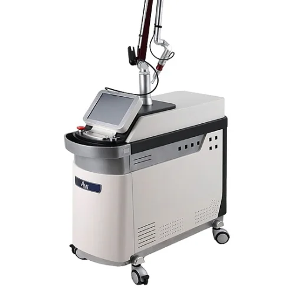

EYE · 곡선형 6 × 2.5cm
EYE 패치
눈 밑 굴곡에 맞춘 곡선형 패치로, 양쪽 눈 밑에 한 장씩 붙여 눈밑지방 돌출과 다크서클 부위를 관리합니다.
이런 분께 · 눈밑지방 돌출, 다크서클
홈 > 피부미용 > 눈밑지방·흉터 충격파
레이저 유도 충격파(LISW)로 관리하는 눈밑지방 돌출 · 다크서클 · 모공 · 여드름 흉터
갈창림 한의원은 경상북도 경산시 하양읍에 있습니다. 경산·하양·진량·와촌, 영천 금호, 대구 동구(안심)에서 눈밑지방 돌출·다크서클·여드름 흉터 관리를 찾으시는 분께 DA채움 패치와 큐마스터플러스로 시술하며, 화~일요일(토·일 포함)에 받으실 수 있습니다.
LISW · LASER-INDUCED SHOCK WAVE
피부에 검은 전용 패치(DA채움)를 붙이고 그 위로 1064nm 큐스위치 레이저를 조사합니다. 패치 속 블랙 다이아몬드 입자가 레이저 빛을 흡수해 순간적으로 팽창하면서, 나노초(10억분의 1초) 단위의 짧은 압력파, 곧 충격파를 만듭니다. 이 충격파가 피부 속 진피와 그 아래 지지 조직까지 전달됩니다.
레이저 빛은 대부분 패치가 받아 내고 피부에는 압력파로 전달되기 때문에, 열보다는 짧은 물리적 자극으로 작용하는 방식입니다. 이를 레이저 유도 충격파(LISW)라고 부릅니다.
절개 없이, 눈밑은 곡선형 패치로 · 흉터와 모공은 사각형 패치로.
피부미용시술은 대표원장이 진료하는 화~일요일에 받으실 수 있습니다 (월요일은 시술하지 않습니다)
CONCERN
| 고민 | 왜 생길까요 | 충격파로 이렇게 관리합니다 |
|---|---|---|
| 눈밑지방 돌출 | 눈 밑 지방을 받쳐 주던 막(안와격막)이 느슨해져 지방이 앞으로 밀려 나옵니다. | 곡선형 EYE 패치로 느슨해진 지지 조직을 자극해, 볼록한 경계를 완만하게 관리합니다. |
| 다크서클 | 색소에 더해 눈 밑에 고인 혈액·림프 순환 정체와 얇은 피부가 겹쳐 어둡게 보입니다. | EYE 패치로 눈 밑 순환을 돕는 자극을 줍니다. 색소가 주원인이면 토닝을 함께 계획합니다. |
| 여드름 흉터 | 흉터 아래 단단한 섬유 띠가 피부를 아래로 당겨 패여 보입니다. | 사각형 SCAR 패치로 흉터 아래 섬유 조직을 자극합니다. 작고 많은 흉터에 고려합니다. |
| 모공 | 탄력이 줄거나 흉터와 함께 생겨 모공이 넓고 늘어져 보입니다. | SCAR 패치로 넓어진 모공이 모인 부위의 진피를 자극합니다. |
PATCH
EYE · 곡선형 6 × 2.5cm
눈 밑 굴곡에 맞춘 곡선형 패치로, 양쪽 눈 밑에 한 장씩 붙여 눈밑지방 돌출과 다크서클 부위를 관리합니다.
이런 분께 · 눈밑지방 돌출, 다크서클
SCAR · 사각형 6 × 3cm
흉터나 넓은 모공이 모인 부위에 붙이는 사각형 패치입니다. 볼처럼 흉터가 모인 자리를 집중해서 관리합니다.
이런 분께 · 작고 많은 여드름 흉터, 넓어진 모공
※ 패치는 한 번 쓰고 버리는 1회용입니다.
EQUIPMENT

큐스위치 Nd:YAG · 1064nm
아주 짧은 순간에 에너지를 내는 큐스위치 Nd:YAG 레이저입니다. DA채움 패치 위로 1064nm를 조사해 충격파를 만듭니다.
사용 시술 · 눈밑지방·흉터 충격파, GD토닝, 레이저토닝
PROCESS
BEFORE
아래에 해당하면 시술을 미루거나 다른 방법을 고를 수 있습니다. 진료 때 말씀해 주세요.
SIDE EFFECTS
시술 후 흔히 나타나는 반응과 드물게 생길 수 있는 부작용입니다. 시술 전에 피부 상태를 확인하고 함께 설명해 드립니다.
시술 직후 시술 부위가 붉게 부어오르며, 보통 며칠 안에 가라앉습니다.
작은 혈관이 자극을 받아 붉은 점(점상 출혈)이나 멍이 생길 수 있고, 보통 1주 안팎에 옅어집니다.
시술 중 톡톡 치는 듯한 느낌이 있고, 시술 후 잠시 뻐근하거나 누르면 아플 수 있습니다.
자극을 받은 피부가 자외선에 노출되면 갈색으로 짙어질 수 있습니다.
패치가 들뜨거나 피부 상태에 따라 드물게 물집이나 화상이 생길 수 있습니다. 생기면 바로 연락해 주세요.
※ 부작용의 종류와 정도는 피부 상태와 시술 방법에 따라 개인차가 있습니다. 이상 반응이 있으면 바로 한의원(053-851-0122)으로 연락해 주세요.
CAUTION
※ 필요한 횟수와 효과는 눈밑과 흉터의 상태에 따라 개인차가 있습니다.
FAQ
아닙니다. 눈밑지방 재배치는 지방을 옮기는 수술이고, 충격파 시술은 절개 없이 지방을 받치는 조직을 자극해 볼록한 경계를 완만하게 관리하는 방법입니다. 수술이 부담스러운 분이 고려할 수 있지만, 지방 돌출이 심하면 이 시술만으로는 한계가 있어 진찰 후 알맞은 방법을 안내해 드립니다.
눈밑지방 돌출과 다크서클은 2주 간격으로 3회를 기본으로 합니다. 모공과 여드름 흉터는 4주 간격으로 반복하며, 횟수는 흉터의 깊이와 개수를 보고 안내해 드립니다. 결과에는 개인차가 있습니다.
마취 크림을 약 30분 바른 뒤 시술합니다. 시술 중에는 톡톡 치는 듯한 타격감이 느껴질 수 있고, 시술 후 잠시 뻐근할 수 있습니다.
일상생활은 가능하지만, 시술 직후 붉게 부어오르고 붉은 점이나 멍이 생길 수 있어 보통 1주 안팎은 티가 날 수 있습니다. 중요한 일정이 있다면 미리 상의해 주세요.
크고 경계가 뚜렷한 흉터는 서브시전(새살침), 니들RF(실펌X), CO2 핀홀 등이 알맞을 수 있습니다. 흉터의 모양과 크기에 따라 충격파와 함께 계획하며, 시술 간격은 진찰 후 안내해 드립니다.
COLUMN
작성·검토갈창림 대표원장 (한의사)최종 검토 2026년 11월 14일